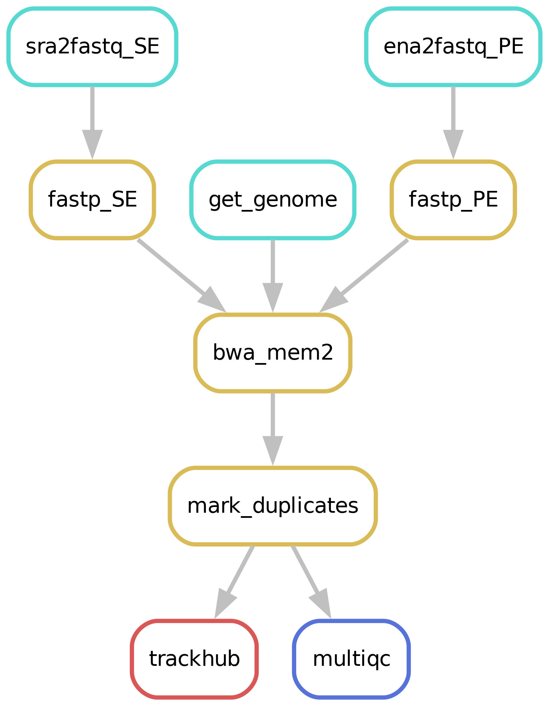

Alignment
Aligning samples has never been easier!
Workflow overview (simplified)

Downloading of sample(s)
Depending on whether the samples you start seq2science with is your own data, public data, or a mix, the pipeline might start with downloading samples. You control which samples are used in the samples.tsv. Background on public data can be found here.
Read trimming
The pipeline starts by trimming the reads with Trim Galore! or Fastp (the default). The trimmer will automatically trim the low quality 3’ ends of reads, and removes short reads. During the quality trimming it automatically detects which adapter was used, and trims this as well. Trimming parameters for the pipeline can be set in the configuration.
Alignment & Sorting
After trimming the reads are aligned against an assembly. Currently we support bowtie2, bwa, bwa-mem2, hisat2 and STAR as aligners. Choosing which aligner is as easy as setting the aligner variable in the config.yaml, for example: aligner: bwa. Sensible defaults have been set for every aligner, but can be overwritten for either (or both) the indexing and alignment by specifying them in the config.yaml:
aligner:
bwa-mem:
index: '-a bwtsw'
align: '-M'
The pipeline will check if the assembly you specified is present in the genome_dir, and otherwise will download it for you through genomepy. All these aligners require an index to be formed first for each assembly, but don’t worry, the pipeline does this for you.
The outputted alignment.bam is immediately sorted by either samtools or sambamba (bam_sorter) either in queryname or coordinate (default) order.
Custom assembly extensions
The genome and/or gene annotation can be extended with custom files, such as ERCC spike-ins for scRNA-seq. To do so, add custom_genome_extension: path/to/spike_in.fa and custom_annotation_extension: path/to/spike_in.gtf to the config.
Seq2science will place the customized assembly in a separate folder in the genome_dir.
Mark duplicates
After aligning & sorting the bam duplicate reads are being ‘marked’ by picard Markduplicates. You can change the call by setting markduplicates in config.yaml.
Samtools index
Many downstream tools require an index of the deduplicated bam. The pipeline automatically generates these for you.
Quality report
It is always a good idea to check the quality of your samples. Along the way different quality control steps are taken, and are outputted in a single multiqc report in the qc folder. Make sure to always check the report, and take a look at interpreting the multiqc report!
Trackhub
A UCSC compatible trackhub can be generated for this workflow. See the trackhub page for more information!
Filling out the samples.tsv
Before running a workflow you will have to specify which samples you want to run the workflow on.
Each workflow starts with a samples.tsv as an example, and you should adapt it to your specific needs.
As an example, the samples.tsv could look something like this:
sample assembly technical_replicates descriptive_name
GSM123 GRCh38 heart_1 heart_merged
GSM321 GRCh38 heart_1 heart_merged
GSMabc GRCh38 heart_2 heart_not_merged
GSMxzy danRer11 stage_8 stage_8
GSM890 danRer11 stage_9 stage_9
Sample column
If you use the pipeline on public data this should be the name of the accession (e.g. GSM2837484). Accepted formats start with “GSM”, “SRR”, “SRX”, “DRR”, “DRX”, “ERR” or “ERX”.
If you use the pipeline on local data this should be the basename of the file without the extension(s). For example:
/home/user/myfastqs/sample1.fastq.gz——->sample1for single-ended data/home/user/myfastqs/sample2_R1.fastq.gz┬>sample2for paired-ended data
/home/user/myfastqs/sample2_R2.fastq.gz┘
For local data, some fastq files may have slightly different naming formats.
For instance, Illumina may produce a sample named sample3_S1_L001_R1_001.fastq.gz (and the R2 fastq).
Seq2science will attempt to recognize these files based on the sample name sample3.
For both local and public data, identifiers used to recognize fastq files are the fastq read extensions (R1 and R2 by default) and the fastq suffix (fastq by default).
The directory where seq2science will store (or look for) fastqs is determined by the fastq_dir config option.
In the example above, the fastq_dir should be set to /home/user/myfastqs.
These setting can be changed in the config.yaml.
Assembly column
Here you simply add the name of the assembly you want your samples aligned against and the workflow will download it for you.
Descriptive_name column
The descriptive_name column is used for the trackhub and multiqc report. In the trackhub your tracks will be called after the descriptive name, and in the multiqc report there will be a button to rename your samples after this column. The descriptive name can not contain ‘-’ characters, but underscores ‘_’ are allowed.
technical_replicates column
Technical replicates, or any fastq file you may wish to merge, are set using the technical_replicates column in the samples.tsv file.
All samples with the same name in the technical_replicates column will be concatenated into one file with the replicate name.
Example samples.tsv utilizing replicate merging:
sample assembly technical_replicates
GSM123 GRCh38 heart
GSMabc GRCh38 heart
GSMxzy GRCh38 stage8
GSM890 GRCh38
Using this file in the alignment workflow will output heart.bam, stage8.bam and GSM890.bam. The MultiQC will inform you of the trimming steps performed on all samples, and subsequent information of the ‘replicate’ files (of which only heart is merged).
Note: If you are working with multiple assemblies in one workflow, replicate names have to be unique between assemblies (you will receive a warning if names overlap).
keep
Replicate merging is turned on by default. It can be turned off by setting technical_replicates in the config.yaml to keep.
Colors column
If you are visualizing your data on the UCSC trackhub you can optionally specify the colors of each track. To do so, you can add the color by name (google “matplotlib colors” for the options), or RGB values, in the “colors” column. Empty fields are considered black.
Final notes
Make sure that the samples.tsv is a tab separated values file when running the pipeline.
Feel free to delete or add columns to your liking.
Filling out the config.yaml
Every workflow has many configurable options, and can be set in the config.yaml file. In each config.yaml we highlighted a couple options that we think are relevant for that specific workflow, and set (we think) reasonable default values.
When a workflow starts it prints the complete configuration, and (almost) all these values can be added in the config.yaml and changed to your liking. You can see the complete set of configurable options in the extensive docs.
Best practices
BAM mapping quality filtering
All aligners pass a mapping quality (MAPQ) score to the reads.
This score reflects the certainty that a read belongs to a certain genomic position.
This score can then be used by deeptools to only keep reads of which the aligner is certain where it aligns, and to limit multimappers.
You can set the minimum mapq score by using the configuration variable min_mapping_quality.
Unfortunately, most aligners use a different scoring system.
This problem has been nicely summarized in this article.
For the default aligners (BWA and STAR), a minimal quality score has been set to select uniquely mapped reads only. For other aligners, we suggest the following scores to filter for uniquely mapped reads:
Aligner |
min. MAPQ scores for uniquely mapped reads |
|---|---|
Bowtie2 |
41 |
Bwa-mem(2) |
30 |
Hisat2 |
44 |
Minimap |
0, but use |
STAR |
255 |
Cram support
For the edge-case where you want to work with cram files instead of bams, there is an option cram_no_bam which will convert your bam files to cram (saves around 60% storage).
subsampling
In some cases you might want to have the same number of reads between samples. By adding e.g. subsample:1_000_000 seq2science will make sure that each sample contains at most a million reads. Seq2science always downsamples, never upsamples.